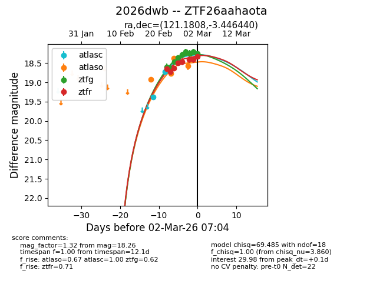
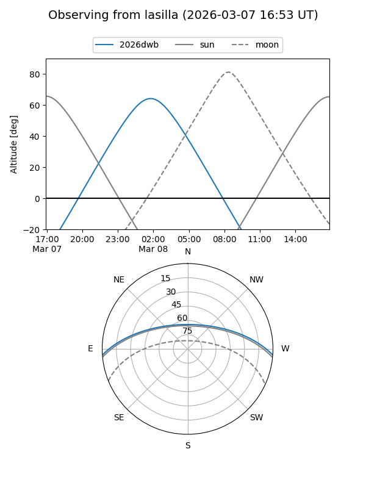
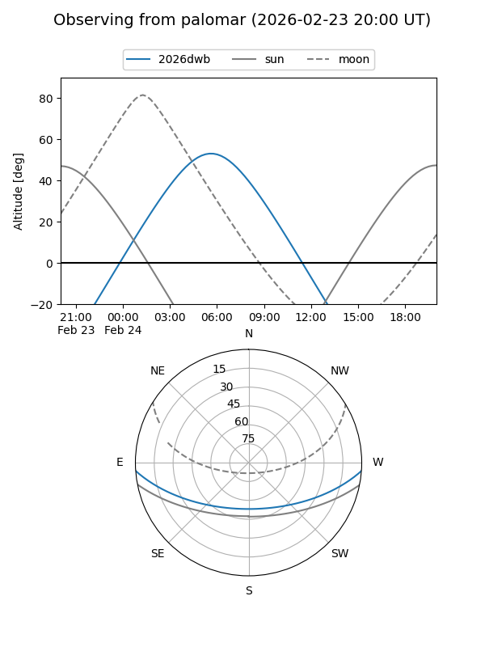
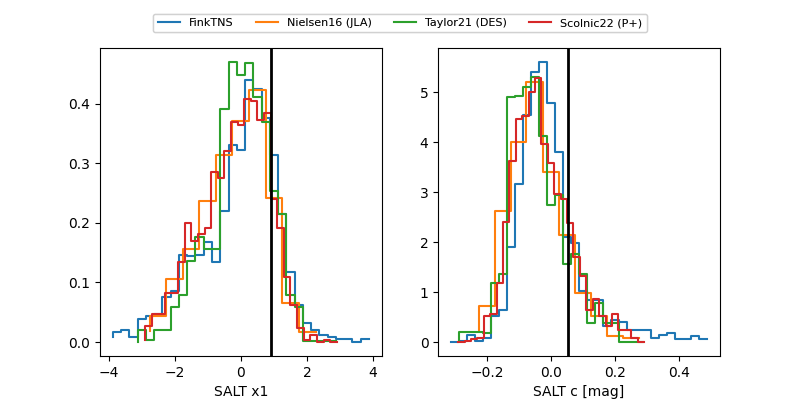

2026dwb
Target 2026dwb at 2026-03-02 07:07
Aliases and brokers:
FINK: link
Lasair: link
ALeRCE: link
TNS: link
YSE: link
alt names
ZTF26aahaota (ztf,fink_ztf)
2026dwb (tns,yse)
Coordinates:
equatorial (ra, dec) = 121.1808,-3.44644
equatorial (HMS+DMS) = 08:04:43.38,-03:26:47.18
galactic (l, b) = (224.6518,+14.58677)
Flags:
Photometry:
last atlasc=18.72, atlaso=18.56, ztfg=18.26, ztfr=18.33
2 atlasc, 4 atlaso, 9 ztfg, 8 ztfr detections
Lightcurve

Visibility


Additional plots
